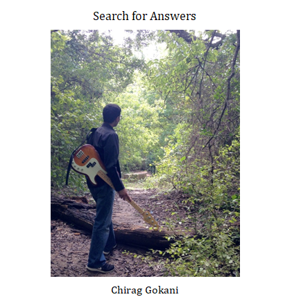

Tomorrow the mountains will be sleeping / Silent 'neath a blanket green and blue / All that I shall hear / The silence they are keeping / I'll bring all their promises to you.
-Townes Van Zandt, “Snowin’ on Raton”
I recorded this demo album at Paul Osborn's Audio Dallas Recording Studio in the fall and winter of 2018. I play electric bass on all the tracks and wrote all the arrangements. Tracks 5, 10, and 14 are original compositions.
1. It’s You I Like
by Fred Rogers
with Aaron Stone (trumpet), Brandon Bateman (alto), Khai Nguyen (piano), Colman Burks (drums), Mike Camerata (conga)
2. Autumn Longing
Music by Stephen Houpt; Words by 8th century Chinese poet Wang Wei
with Stephen Houpt (vocals)
3. Maiden Voyage
by Herbie Hancock
with Aaron Stone (flugelhorn), Brandon Bateman, Khai Nguyen, Colman Burks, Mike Camerata
4. Something
by George Harrison
with Isaac Byrd (piano), Colman Burks, Mike Camerata
5. Downtown Blues
with Christian Kondor (vocals), Stephen Houpt (harmonica)
6. Days of Wine and Roses
by Henry Mancini
with Khai Nguyen, Colman Burks, Mike Camerata
7. Sesame Street
by Toots Thielemans
with Aaron Stone, Brandon Bateman, Khai Nguyen, Mike Camerata, Colman Burks
8. Nearer, My God, to Thee
by Sarah Flower Adams
9. The Chicken
by Pee Wee Ellis
with Aaron Stone, Brandon Bateman, Khai Nguyen, Colman Burks, Mike Camerata
10. Searching
Stephen Houpt (Weissenborn steel guitar)
11. Playing With My Friends
by B.B. King & Robert Cray
with Will Clark (lead guitar & vocals), Collin Katz (rhythm guitar) Khai Nguyen, Aaron Stone, Brandon Bateman, Colman Burks
12. Parachutes
by Coldplay
with Christian Kondor (vocals)
13. Biji
by Sonny Rollins
with Aaron Stone, Isaac Byrd, Colman Burks, Mike Camerata
14. I’ll Be Through Them Hills and Gone
with Aaron Stone, Isaac Byrd, Colman Burks, Mike Camerata

Recording in Studio B at Audio Dallas. Thanks to Paul Osborn for the pictures.